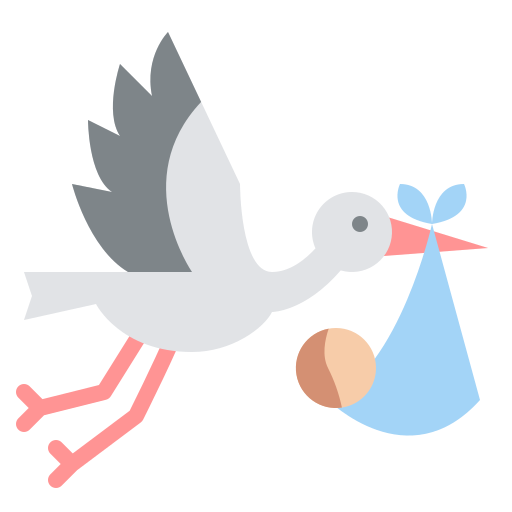

Paul Gauguin



Nascita:
7 Giugno 1848, Parigi, Francia
Morte:
8 Maggio 1903, Hiva Oa, Polinesia Francese
Corrente:
Post-Impressionismo


Opere più famose: Due donne tahitiane 1891; Da dove veniamo? Chi siamo? Dove andiamo? 1897
Curiosità: Spesso Gauguin dipingeva usando brillanti colori di fantasia. Diceva che “per vederci” chiudeva gli occhi.
Citazione: “Non dipingete troppo secondo natura. L’arte è astrazione; ricavatela dalla natura, mentre sognate di fronte a essa.”